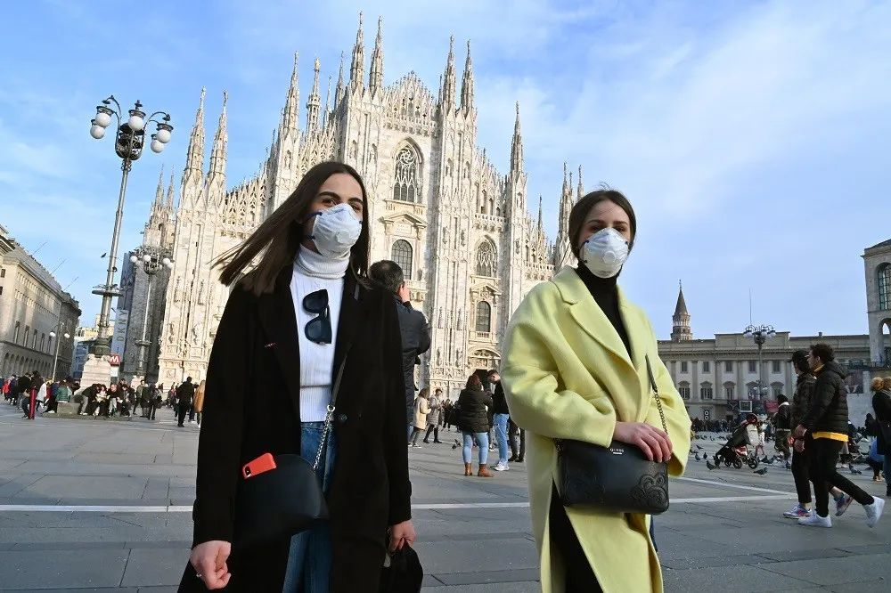

确诊157例，11个城镇“封城”！意大利成欧洲疫情最严重国家…
原文链接 备份链接 截至当地时间24日零时，意大利累计确诊157例新冠病毒肺炎感染病例，2人治愈出院，新增1例死亡病例，累计3例死亡病例。据欧联通讯社报道，死者是一位身患癌症的年长女性，确诊被感染新冠肺炎病毒后不治。 意大利紧急民防部部 …

由于确诊病例迅速攀升，意大利成为亚洲国家之外疫情最严重的国家。为了控制病毒的扩散，意大利政府从2月22日起在11个市镇采取了“封城”举措。在被封锁地区，只有持特别通行证者才能出入

2月23日，意大利米兰市中心的大教堂广场前，很多人都戴起了口罩。图/法新
文 |《财经》记者 江玮
编辑 | 郝洲
封城、取消意甲比赛、大学停课、歌剧停演、教堂关闭，意大利突然陷入了新型冠状病毒肺炎急剧爆发的紧急状态。截至当地时间2月23日下午，意大利共发现152例确诊病例，其中3人在48小时内先后去世。而三天前，意大利的确诊数目还只停留在3例。
意大利总理孔特在接受意大利媒体采访时表示：“我对这些病例的爆发感到惊讶。”他表示意大利在未来几天可能还会出现更多病例。由于确诊病例迅速攀升，意大利成为亚洲国家之外疫情最严重的国家。为了控制病毒的扩散，意大利政府从2月22日起在11个市镇采取了“封城”举措。在被封锁地区，只有持特别通行证者才能出入。
世界卫生组织发言人塔里克·贾萨瑞维奇(Tarik Jasarevic)对《财经》记者表示：“机会窗口正在变小，我们必须抓住时机阻止一场更大范围的全球危机。”
疫情急转直下
意大利于1月30日发现来自武汉的一对夫妻游客感染新冠病毒，为该国最早的确诊病例。随后，意大利宣布暂停所有往来于中国的航班，并进入六个月的紧急状态。此后一段时间，意大利确诊病例没有出现明显增长，直到最近两日情况突然急转直下。意大利目前公布的确诊病例主要来自北部地区的伦巴第和威尼托。两个重灾区为意大利的经济重镇，贡献了全国30%的GDP。
在2月22日召开内阁紧急会议之后，意大利总理孔特当晚宣布一系列紧急措施，包括封锁伦巴第、威尼托大区的11个市镇。被封锁区域目前出入通道由警察把控，所有公共活动暂停，交通也被限制，影响范围覆盖大约5万人。违反防疫要求的违规者将会被处以最多三个月监禁或最高206欧元（约合人民币1567元）的罚款。
由于新型冠状病毒肺炎在意大利迅速蔓延，三场原定于23日晚上举行的意甲联赛被延期，其中包括意甲豪门国际米兰主场对桑普多利亚的一场比赛。意大利教育部发布公告，要求伦巴第、威尼托、艾米利亚-罗马涅三个大区的高等院校暂时停止教学活动至2月29日。
周旻雪是意大利都灵大学的一名中国学生，她所在的城市都灵属于皮埃蒙特大区，虽然不在上述三个大区范围之内，但也已经出现了6例确诊病例。她于23日晚上八点收到学校发出的通知，宣布暂时停课至29日，复课时间仍待另行通知。周旻雪来自湖北鄂州，她对《财经》记者表示：“我之前担心家里，现在家里担心我。”她在周围的药店已经买不到消毒水、免洗洗手液和口罩。
23日，周旻雪去了一趟超市采购食物，看到货架上的物品还算充足。但生活在米兰的另一名中国留学生却发现他去的那家超市货架上的食品已经基本被抢购一空。“前一天去的时候还不是这样。”他对《财经》记者表示。
目前确诊的152个病例中，有110例来自伦巴第大区。米兰是这一地区的首府，尽管确诊病例主要集中在米兰南部的城镇，但出于对控制病毒传播的考虑，米兰大教堂将对游人暂时关闭至2月25日；米兰斯卡拉歌剧院（Teatro alla Scala）23日宣布暂停剧场演出；米兰的学校也停课一周。
当新冠病毒在意大利爆发时，米兰时装周正接近尾声。奢侈品牌阿玛尼(Giorgio Armani)表示，他们原定23日的时装表演将在没有观众的情况下完成。
确诊病例数量紧随伦巴第大区的是威尼托大区，其首府为威尼斯。从2月8日开始的威尼斯狂欢节原本将持续至25日，但威尼托大区行政长官卢卡·扎亚叫停了最后三天的狂欢节活动。
“（意大利）卫生部门采取了一系列措施阻止进一步传播，比如关闭学校、酒吧，停止体育赛事和其他大型集会。这与中国采取的遏制战略是一致的。”贾萨瑞维奇对《财经》记者说。
寻找意大利“零号病人”
意大利卫生部长罗伯托·斯佩兰萨表示，意大利正在出现与德国、法国相似的群聚性案例。世界卫生组织发言人贾萨瑞维奇也表示，意大利北部出现的群聚性感染表明意大利首次出现了本地传播。在他看来，重要的是要弄清事情是如何演变的，发现并追踪接触者。
但意大利民事保护署负责人安杰洛·博雷利在23日的新闻发布会上表示：“我们还不能查明谁是零号病人，因此很难预测新的可能病例。”
意大利新近出现的一些病例来自伦巴第大区科多尼奥的一家医院。一名38岁的意大利男性是当地首例确诊病人。在他因感染新冠病毒入院后，他的妻子和一名朋友也被查出感染。在他接受治疗的医院，3名病人和5名医护人员在病毒检测中呈阳性。被他感染的那位朋友其父开有一家酒吧，3名高龄常客已被确诊。
意大利《共和国报》还原了这名“一号病人”的行动轨迹。在确诊之前，他先于在2月2日去往热那亚附近海滨城市参加了半程马拉松，4日与朋友一起去了一家酒吧，9日参加了另一场跑步比赛，期间继续在单位联合利华上班。2月15日，他参加了一场足球比赛和一场红十字会培训，并与两名朋友一起聚餐。他在饭后出现了不适症状。
目前这名男子的感染途径仍未明了，因此仍然无法确定谁是“零号病人”。他曾与一名从中国返回的意大利男性一起吃饭，后者在2月初出现了流感症状，但对其的病毒检测结果呈阴性。
“尽管中国之外的确诊案例仍然相对较少，但我们对缺乏明显流行病学关联的病例表示担忧，比如是否去过中国或者与确诊案例有过接触。”贾萨瑞维奇说。
威尼托大区行政长官卢卡·扎亚表示，病毒像流感一样传播，试图精准查明单一来源或者建立与中国的关联不再是有效的遏制举措。“你可以从任何人那里感染。我们会看到没有与疑似病例接触的确诊病人。”
部分华人处境受影响
病毒在意大利的蔓延也使得当地华人的处境受到影响。1月底，意大利罗马的一家音乐学院曾要求来自东亚国家的学生停课。在都灵留学的一名中国学生对《财经》记者表示，两周前在地铁上，一名十几岁的青少年捂着嘴避开了他。但除此之外，没有更多不愉快的经历发生。一些社交媒体上出现针对华人超市的打砸抢或者反华游行图片也已经被证明为谣言。
但一名华人女性成为了种族歧视的受害者。2月20日，一名在都灵生活多年的华人遭到两名意大利人的袭击。据意大利《新闻报》23日报道，事发时间在白天，地点为都灵市中心。当时这名华人女性在路边等红绿灯，两名三四十岁的意大利人走向她，并夹杂着脏话冲她喊：“病毒，快离开都灵。”这名女性试图解释，即使她是中国人，也不意味着她就携带了病毒。但男子持续辱骂她，与其同行的一名女性则动手打了她。都灵市长奇亚拉·阿彭迪诺对这一行为表示谴责，称其卑鄙可耻。
对于在意大利的华人来说，他们纠结的一个问题是：在能够买到口罩的前提下，到底要不要戴上口罩？在当地人看来只有患病的情况才需要戴上口罩，而华人则把戴口罩视为一种自我保护或者保护他人。手里只有一个口罩的周旻雪决定减少出门，在目睹了家乡疫情爆发的经过之后，她为意大利人对病毒缺乏警惕的心态感到担忧。

▲点击图片查看更多疫情报道
责编 | 黄端 duanhuang@caijing.com.cn
本文为《财经》杂志原创文章，未经授权不得转载或建立镜像。如需转载，请在文末留言申请并获取授权。
原文链接 备份链接 截至当地时间24日零时，意大利累计确诊157例新冠病毒肺炎感染病例，2人治愈出院，新增1例死亡病例，累计3例死亡病例。据欧联通讯社报道，死者是一位身患癌症的年长女性，确诊被感染新冠肺炎病毒后不治。 意大利紧急民防部部 …
原文链接 备份链接 伦巴第大区。图片来源：天空新闻截图 记者：安晶 “ 虽然前三例病例出现在罗马，但疫情并没有在罗马爆发，而是发生在伦巴第大区。 ” 面对新型冠状病毒肺炎疫情的爆发，成为欧洲重灾区的意大利宣布北部11个市镇进入封城隔离，违 …
原文链接 备份链接 图片来源：安莎通讯社 记者：潘金花 “ 意大利正出现德法已有的本地人传人感染群。随着伊朗病例的大幅增加，中东疫情也在逐步扩散。世卫组织担心新冠病毒在卫生系统薄弱的国家蔓延。 ” 随着新冠肺炎疫情在全球蔓延，本周，疫情正 …
原文链接 备份链接 体坛周报全媒体驻意大利记者 王勤伯 意大利新冠疫情突然爆发，不少同事、朋友和读者都对我表达了关心，这里就借体坛加APP的一个角落，和大家聊聊我正在经历的意大利疫情。 （1） 先聊一下对意大利卫生防疫系统和本次应对新冠的 …
原文链接 备份链接 全国多数省区已实现“零新增”，统计上未见疫情卷土重来证据，也未发现意味着疫情死灰复燃的个案 文/《财经》数据研究员徐进 图/《财经》视觉中心 编辑/谢丽容 今天是农历二月二“龙抬头”。按北方农村传统，今起春耕大忙开 …